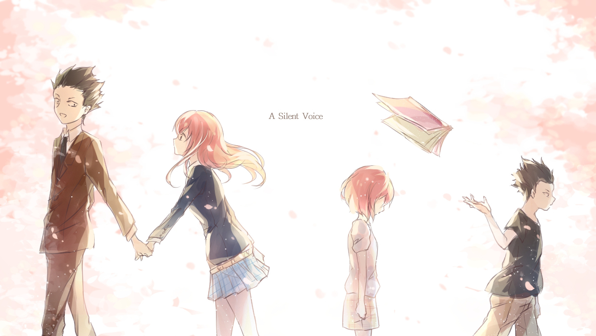
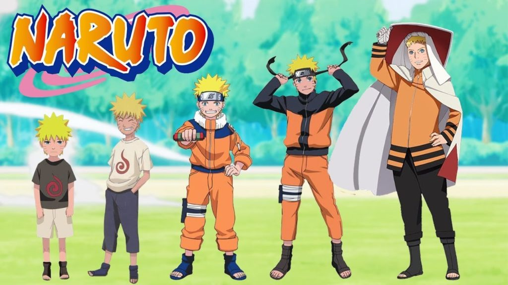

Eiga Koe no Katachi (A Silent Voice)
Movie : 2 jam 10 menit
17 september 2016
Jepang
One Piece
Series: On Going
22 Juli 1997
Jepang

Naruto Shippuden
Series: 500 Episode
Agustus 2007
Jepang
Fairy Tale
Series: 328 Episode
12 Oktober 2009
Jepang

Bleach
Series: 366 Episode
Agustus 2001
Jepang
Hunter X Hunter
Series: 148 Episode
2 Oktober 2011
Jepang
Kimi no na wa (Your Name)
Movie : 1 jam 52 menit
26 Agustus 2016
Jepang